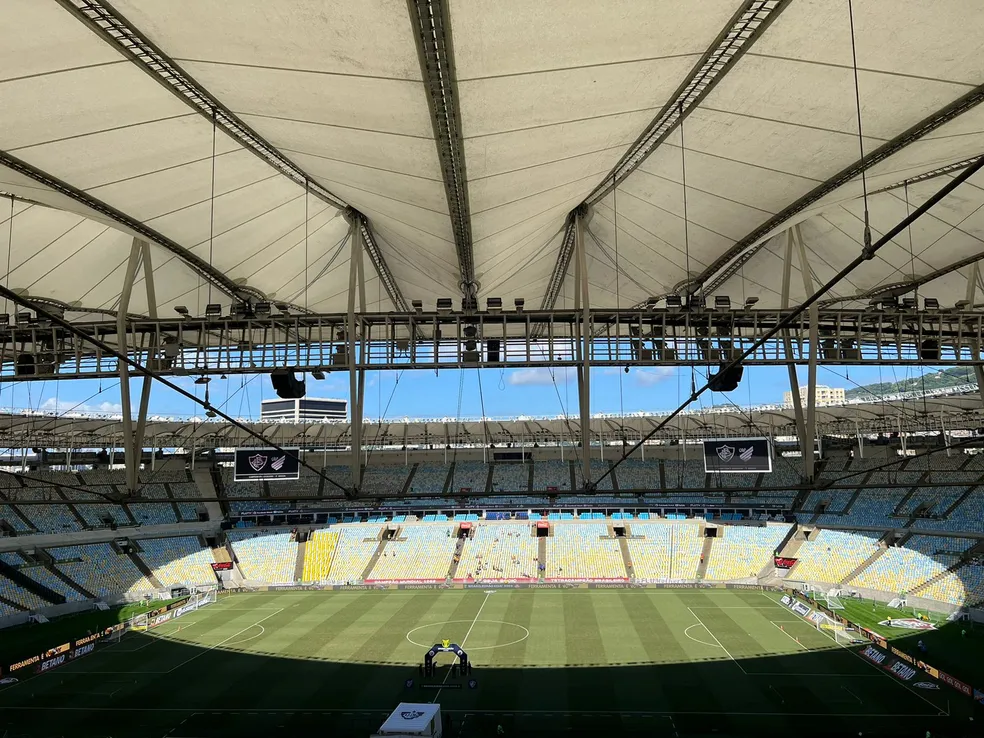
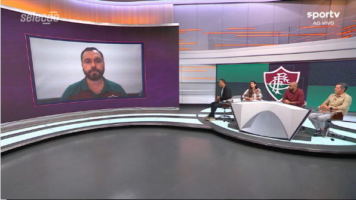

Flamengo e Fluminense assinam renovação de cessão por mais 180 dias
Os presidentes de Flamengo e Fluminense assinaram nesta terça-feira mais um acordo de cessão temporária do Maracanã. Foi o sétimo consecutivo Termo de Permissão de Uso entre Governo do Estado do Rio de Janeiro e os dois clubes cariocas.
O concessionário no contrato é o Flamengo, com o Fluminense entrando como interveniente anuente. O acordo estabelece que os clubes têm mais 180 dias para administrar o estádio. O jornal "O Globo" divulgou a informação, confirmada pelo ge.
Nesta terça, a Casa Civil do Governo do Estado manifestou expectativa de retomada da licitação do Maracanã em 40 dias. O atual TPU a termina nesta terça-feira. O novo acordo será publicado no Diário Oficial do Governo do Estado nesta quarta.
Confira abaixo o vídeo Sobre esse Acordo
Em nota, a Casa Civil respondeu o seguinte sobre o processo de licitação suspenso desde outubro do ano passado:
"O Governo do Estado está finalizando as justificativas e alterações sobre o processo de concessão do Maracanã, que está sob análise do TCE. O material será entregue até o próximo dia 29, quando termina o prazo concedido pelo tribunal. Após esta etapa, o processo passará por nova análise do corpo técnico do TCE e também do Ministério Público do Tribunal. A expectativa é que o julgamento seja favorável aos ajustes e a licitação seja retomada dentro de 40 dias."
O caso está em análise no Tribunal do Estado do Rio de Janeiro, após pedido do Vasco pelo impedimento de mais uma renovação automática com Fla e Flu - a sétima desde 2019. O processo caiu em sorteio para a desembargadora Lidia Maria Sodré de Moraes, na 6ª Câmara de Direito Público. Nessa segunda, o juiz Marcello Alvarenga declinou de competência para o mérito.